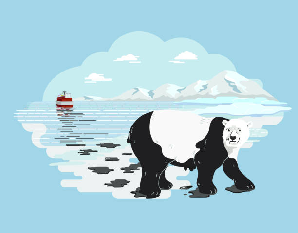
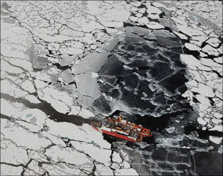

Global warming is affecting many species on our planet,including polar bears. Some species can respond to the changing global climate,but other species are unable to adjust to changing condition.So these species become extinxt. Polar bears spend most of their lives on the sea ice of the Arctic Ocean. But the problem is Arctic has warmed in recent years, the ice is melting quickly.
We all can reduce global warming, to save polar bears and other endangered species. So what we have to do?
Use our cars less
Use energy efficient light bulb
Recycle more and avoid products that have lots of packaging
Plant trees
Go solar
Save energy
Prevention habitat fragmentation
As summer sea ice disappears, Big Oil, commercial fishing, shipping and other industries have set their sights on the Arctic as a replacement source for profits. So far, mismanagement of virtually every other ocean on the earth has led us to a brave new world of collapsing fisheries, massive dead zones, huge floating garbage patches and destroyed habitats. The Arctic Ocean long protected by a blanket of ice and now on the brink of major new development could be our last chance to urge oceans management right.
How we can prevent habitat fragmentation to protect polar bears,
Protect key ecosystems
Strict Artic Specific standards
Ecosystem based management
Protection for the hign seas of the central artic ocean
Reducing industrial impact
Industrial impact is a biggest global challenge.Additional pressure is put on the ecological and environmental health of Arctic areas by industrial development. In Canada, Russia and United State onshore oil exploration and extraction has taken place for many years and it is becoming a threat to polar bear's habitats and the oil spill could affect the polar bear's entire food supply system. Furthemore, any oil ingested could cause fatal kidney failure and if their fur came into contact with oil it would no longer provide insulation, increasing the chance of death from hypothermia.

Analyze the technical capacities available to prevent and respond to oil spills.
WWF(World Wide Fund for Nature) preparing maps to help ships stay clear of ecologically sensitive places around the arctic. IT's one of the best action for protect polar bears from oil spills.

Oil spill in Arctic
Creating safe communities
Polar bear is a big,fluffy,huggable animal. Thease animals are large and dangerous predators. Keeping polar bearsvseperate from people is better for both , as polar bears that wander into communities pose a risk to people, and people often respond by killing the bears.
Reducing conflict
As climate change forces polar bears to spend long time onshore,they come in contact more often with Arctic communities. These interactions sometimes end badlybfor humans and polar bears. Keeping polar bears separate from people is better for both.WWF has responded with a variety of locally led initiatives to help reduce conflict.